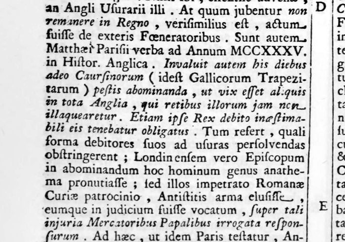
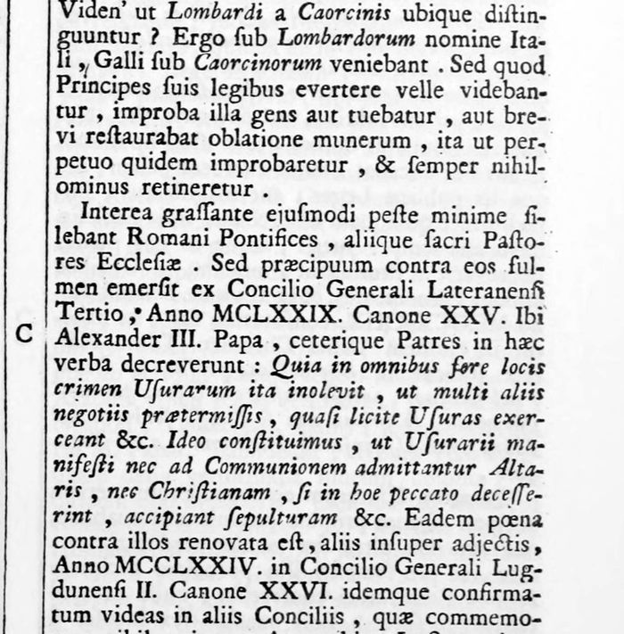

The Florentine companies, and “so sweet a gain” (col. 889)
Latin: Milan 1738, vol. I, col. 889, scan. Highlighted: what Lecky reports.
The companies that Giovanni Villani calls those of the Scali, the Peruzzi, the Acciaiuoli, the Bardi, the Ammanati and others aimed above all at drawing a usurious profit from money lent, since they too borrowed from others, but paid a lighter interest. The same Villani says that the ruin of those companies came from their having lent an enormous sum to Edward III, King of England, who, pressed by the costs of war, could not keep his word. … [A count, mocking a rival’s boast of wealth:] “Very fine, except that I hear the Florentines are great lenders at usury.” And not only the Florentines and Tuscans, but other peoples of Italy too, flocking to so sweet a gain, took up trade both in Italy and in France and England …
Original Latin
Quae a Johanne Villanio appellantur Societates Scalorum, Peruzzorum, Acciajoliorum, Bardorum, Ammanatorum &c. eo prae ceteris spectabant, ut ex pecunia mutuo data foenebris sibi quaestus redundaret, quum et ipsi ab aliis mutuo acciperent, sed leviorem reddendo usuram. Auctor est idem Villanius, inde manasse earum Societatum ruinam, quod Eduardo III. Angliae Regi immanem pecuniae vim mutuam dedissent: is autem belli impensis prementibus datam fidem liberare nequiverit. … Parmene bene, se non ch’io intendo, che i Fiorentini sono grandi prestatori a usura. Neque tantum Florentini ac Etrusci, sed et alii Italiae Populi ad tam dulce lucrum convolantes, tum in Italia, tum in Gallia et Anglia, mercaturam inierunt …
“Sodoma e Caorsa”: Dante and the usurers of Cahors (col. 891)
Latin, with Dante’s Italian: Milan 1738, vol. I, col. 891, scan.

… Dante Alighieri the Florentine, who in Canto XI of the Inferno inveighs against the detestable usurers, and writes among other things:
“And therefore the smallest round seals with its mark both Sodom and Cahors.”
That is, those stained with the unspeakable vice, and usurers. See how Dante, a contemporary, accuses of this crime not the Corsican people but Cahors, a city of France that the Italians called Caorsa, famous in Italy too for its usurious gain. Hear also Benvenuto da Imola …: “And Cahors: that is, usurers. For Cahors is a city in France in which nearly all are usurers.” …
In England King Edward, a most pious king, … “forbade usurers to remain in the kingdom.” … And these are the words of Matthew Paris for the year 1235: “In these days the abominable plague of the Cahorsins (that is, French money-changers) grew so strong that there was hardly anyone in all England who was not already caught in their nets. Even the King himself was bound to them by an incalculable debt.”
Original Latin
… Dantes Aldigerius Florentinus, qui Cant. XI. Infern. in detestandos Foeneratores invehitur, atque inter cetera scribit:
E però lo minor giron suggella
Del segno suo e Sodoma e Caorsa.
Idest nefando vitio inquinatos, et Usurarios. En ut non Corsinam gentem, sed Cadurcum Civitatem Galliae, quae Caorsa ab Italis dicebatur, ob foenebre lucrum in Italia quoque famosam, criminis hujus Dantes synchronus arguit. Audi et Benevenutum Imolensem … E Caorsa: idest Usurarios. Caturgium enim est Civitas in Gallia, in qua quasi omnes sunt Foeneratores. …
In Anglia Eduvardus Rex summe pius … Usurarios defendit (idest interdixit) ne remanerent in Regno. … Sunt autem Matthaei Parisii verba ad Annum MCCXXXV.: Invaluit autem his diebus adeo Caursinorum (idest Gallicorum Trapezitarum) pestis abominanda, ut vix esset aliquis in tota Anglia, qui retibus illorum jam non illaquearetur. Etiam ipse Rex debito inaestimabili eis tenebatur obligatus.
This is the passage behind Lecky’s “From Italy usury passed to France and England”. Muratori takes the Cahorsins for Frenchmen and the Lombards for Italians: “under the name of Lombards came the Italians, the French under that of Cahorsins” (col. 892).
“Crimen usurarum ita inolevit”: the Third Lateran Council, 1179 (col. 892)
Latin: Milan 1738, vol. I, col. 892, scan. Highlighted: what Lecky reports.

Do you see how the Lombards are everywhere distinguished from the Cahorsins? So the Italians came under the name of Lombards, the French under that of Cahorsins. But what princes seemed to wish to overturn by their laws, that shameless race either defended, or soon restored by offering gifts, so that it was forever condemned, and nevertheless always kept.
Meanwhile, as this plague raged, the Roman pontiffs and the other sacred pastors of the Church were by no means silent. But the chief thunderbolt against them came from the Third General Council of the Lateran, in the year 1179, canon 25. There Pope Alexander III and the other Fathers decreed in these words: “Since the crime of usury has taken such root almost everywhere that many, leaving other business aside, practise usury as if it were lawful, etc. We therefore decree that manifest usurers shall not be admitted to the communion of the altar, nor, if they die in this sin, receive Christian burial”, etc. The same penalty was renewed against them, with further additions, in the year 1274, at the Second General Council of Lyon, canon 26.
Original Latin
Viden’ ut Lombardi a Caorcinis ubique distinguuntur? Ergo sub Lombardorum nomine Itali, Galli sub Caorcinorum veniebant. Sed quod Principes suis legibus evertere velle videbantur, improba illa gens aut tuebatur, aut brevi restaurabat oblatione munerum, ita ut perpetuo quidem improbaretur, et semper nihilominus retineretur.
Interea grassante eiusmodi peste minime silebant Romani Pontifices, aliique sacri Pastores Ecclesiae. Sed praecipuum contra eos fulmen emersit ex Concilio Generali Lateranensi Tertio, Anno MCLXXIX. Canone XXV. Ibi Alexander III. Papa, ceterique Patres in haec verba decreverunt: Quia in omnibus fere locis crimen Usurarum ita inolevit, ut multi aliis negotiis praetermissis, quasi licite Usuras exerceant &c. Ideo constituimus, ut Usurarii manifesti nec ad Communionem admittantur Altaris, nec Christianam, si in hoc peccato decesserint, accipiant sepulturam &c. Eadem poena contra illos renovata est, aliis insuper adiectis, Anno MCCLXXIV. in Concilio Generali Lugdunensi II. Canone XXVI.
Lecky’s note 45 adds that the council “is reckoned a general one by the Catholics”, the point of Muratori’s “Concilio Generali”. Lecky’s “should be absolved at the hour of death” is not in the clause Muratori quotes; it may come from the part he cuts with “&c.”, which this edition has not checked against the council’s text.
Further down the rabbit hole
Sources that Lecky cites in the notes next to the ones that cite this page.
- Bédarride, Les Juifs en France, en Italie et en EspagneWhen Christianity came to power, the Jews’ persecution began, and a Pope wrote that God does not rejoice in bloodshed
- Clement V at the Council of Vienne, Ex graviWhere Lecky stops short of the inquisitors’ order
- Concina, Adversus usuram and De spectaculisA Dominican against interest and against the stage: the pope’s own polemicist
- Cibrario, Della economia politica del medio evoTurin, 1388: a heretic who held that the Devil made Adam and Eve, and that usury was no sin
- Montesquieu, De l’esprit des lois, XXI, 20Lecky’s half sentence on scholastics and princes
- M’Culloch, Principles of Political Economy and the Wealth of NationsFoundlings, Calvin on interest, and Scotland’s last serfs, in a Victorian economist’s footnotes
Backlinks
Every place in Rationalism in Europe that links to this page (generated automatically when the site is built).